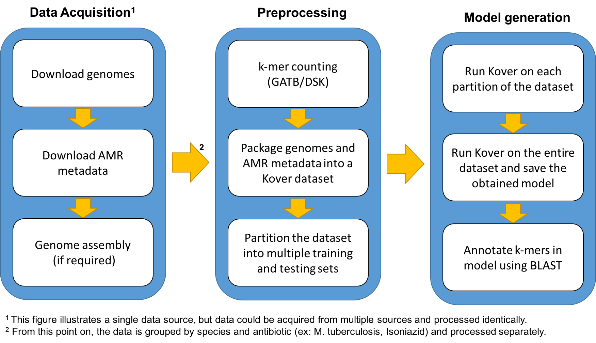

Antimicrobial Resistance Platform
Antimicrobial Resistance Platform
The platform
The Kover Antimicrobial Resistance Platform is a web-based tool for the visualization and interpretation of predictive models of antimicrobial resistance obtained with Kover.
Please refer to the following references for more details:
- Drouin, A., Raymond, F., Letarte St-Pierre, G., Marchand, M., Corbeil, J. & Laviolette, F. (2016). Large scale modeling of antimicrobial resistance with interpretable classifiers. Machine Learning for Health Workshop, NIPS, Barcelona, Spain.
- Drouin, A., Giguère, S., Déraspe, M., Marchand, M., Tyers, M., Loo, V. G., Bourgault, A. M., Laviolette, F. & Corbeil, J. (2016). Predictive computational phenotyping and biomarker discovery using reference-free genome comparisons. BMC Genomics, 17(1), 754.
Pipeline
The following figure illustrates the pipeline that is used to populate the web platform.

At the moment, the only data source of the platform is the PATRIC database, which is a large-scale aggregation platform for bacterial genomes and their associated metadata. More sources will be added in the future.
Note: We only consider combinations of species/antibiotic for which at least 50 resistant and 50 susceptible isolates are available.